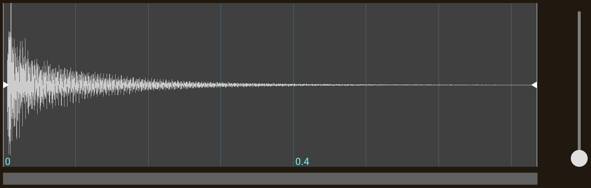

波形ビュー
波形ビューは、読み込んだ音声の波形を拡大・スクロールしながら確認し、編集や再生の対象となる「選択範囲（開始位置〜終了位置）」を操作する領域です。

表示内容
波形ビューの右側には縦の倍率バー、下側には横スクロールバーがあります。左右には端のバーをつかみやすくするための余白が設けられています。
波形と背景の配色（初期値）
| 表示要素 | 初期の色 | 説明 |
|---|---|---|
| 背景（選択範囲外） | 黒 | 選択されていない区間 |
| 選択範囲の背景 | グレー | 開始位置と終了位置のバーの間 |
| モノラル波形 | やや輝度を下げた白 | モノラル音声の波形 |
| ステレオ（L のみ） | 緑 | L チャンネルだけが振れている部分 |
| ステレオ（R のみ） | 赤 | R チャンネルだけが振れている部分 |
| ステレオ（L と R の重なり） | やや輝度を下げた白 | L と R の波形が重なっている部分 |
| 開始位置・終了位置・再生位置 | 白（最大輝度） | 開始位置は右向き三角（▶）、終了位置は左向き三角（◀）付き。再生位置は縦線のみ |
| 目盛りの線・時刻 | 半透明の水色（3 段階） | 中央の 0 レベル水平線と時刻の垂直線（細かい単位ほど薄く表示） |
すべての色は設定画面の「色の設定」で変更できます。ステレオ音声で上部バーの L / R スイッチを片方だけオンにすると、オンのチャンネルの波形だけが表示されます。
目盛りの見方
- ビューの上下中央に、振幅 0 を示す水平線が引かれます。
- 時刻の垂直線は 1 時間・10 分・1 分・10 秒・1 秒・0.1 秒・0.01 秒…の単位で、線の間隔が 25dp 以上になる細かさまで自動表示されます。
- 時刻の文字は線の右下側に表示されます。最も細かい単位の線には原則表示されませんが、波形ビュー中央に最も近い線には必ず表示されます。
タッチ操作一覧
| 操作 | 動き |
|---|---|
| 縦の倍率バーをドラッグ | 縦の拡大率を 1 倍〜256 倍（下が 1 倍、上が 256 倍）に変更します。中央は常に 0 レベルに保たれます。 |
| 指 2 本のピンチイン／アウト | 横の倍率（時間軸）を拡大・縮小します（最小：全体表示、最大：1 サンプル = 16px）。指の中点の位置を基準に拡縮します。 |
| 指 2 本のスライド | 表示位置を左右にスクロールします。ピンチと同時に行えます。 |
| 横スクロールバーをドラッグ | 波形ビューの下にあるバーで左右にスクロールします。 |
| ダブルタップ | 現在の選択範囲（開始位置〜終了位置）が波形ビューの横幅いっぱいに収まるように横倍率とスクロールを合わせます。 |
| ダブルタップ＆横スライド | 2 回目のタップで指を離さず左右に動かすと、触れた位置を中心に横の倍率を変更できます（右で拡大、左で縮小）。 |
| 開始／終了バーをドラッグ | 開始位置または終了位置のバーを左右に動かします。左右の余白を触っても端のバーをつかめます。 |
| 指 1 本の縦スワイプ（上から下） | バーのない場所から下へスワイプ（48dp 以上）して離すと、離した横位置へ開始位置を移動します。 |
| 指 1 本の縦スワイプ（下から上） | バーのない場所から上へスワイプ（48dp 以上）して離すと、離した横位置へ終了位置を移動します。 |
縦スワイプのプレビュー：縦に 48dp 以上動かすと、指を離したときに移動する位置へバーと選択範囲の背景がリアルタイムに追従表示されます。開始位置が終了位置より右になるような無効な位置に指がある場合や、元の高さ付近に戻した場合は元の位置に戻り、離しても位置は変わりません。
選択範囲の決まり
- 音声を読み込んだ直後は、横倍率は全体表示、縦倍率は 1 倍、開始位置は先頭、終了位置は末尾になります。
- 開始位置は常に終了位置より左にあり、互いのバーを追い越すことはできません（最小幅は 1 サンプル分）。
- 拡大・スクロールによってバーが表示範囲外に出ても、選択範囲の位置は保持されます。
- バーのない場所での指 1 本の横ドラッグでは何も起きません（誤操作防止）。